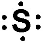
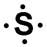
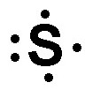
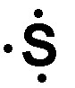
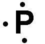
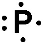
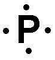
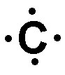
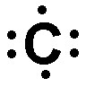
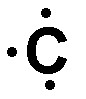

1) What is the name of the following polyatomic ion? NO2-
A) nitroxide
B) nitrogen dioxide
C) nitrate
D) nitrite*
2) Determine the name for CaCl2·2H2O
A) Calcium (II) chloride dihydrate
B) Calcium chloride diaquate
C) Calcium chloride bihydrate
D) Calcium chloride dihydrate*
CaCl2·2H2O is an ionic compound and a hydrate. To name the ionic compound portion give the name of the cation followed by the name of the anion. In this case that would be calcium chloride. it will receive a Roman numeral indicating its charge. The hydrate portion of the formula is named based on the number of water molecules. Since this hydrate has 2 water molecules in its formula the prefix 'di-' is used before the word 'hydrate'. Thus the correct name is calcium chloride dihydrate.
3) Which of the following would have the highest lattice energy?
A) Na2O
B) MgO*
C) Li2O
D) MgCl2
There are two parts that are involved in lattice energy. One is the charge on the ions (this is the bigger priority), and the other is the distance between the ions. This is only testing on knowing that the larger the charge on the ions, the larger the lattice energy. Since Mg has the highest charge, MgO will have the highest lattice energy.
4) The statement "samples of a compound will always contain the same proportion of elements by mass" belongs to:
A) Dalton's Atomic Theory
B) The Law of Multiple Proportions
C) The Law of Definite Proportions*
D) The Law of Conservation of Mass
Dalton's Atomic Theory: Matter is composed of small indestructible particles.
The Law of Conservation of Mass: In a chemical reaction, matter is neither created nor destroyed.
The Law of Multiple Proportions: If two elements form more than one compound, the ratios of the masses of the second element that combine with a fixed mass of the first element will always be ratios of small whole numbers.
The Law of Definite Proportions: Samples of a compound will always contain the same proportion of elements by mass.
5) What is the name of the following polyatomic ion? SO42-
A) sulfite
B) sulfoxide
C) sulfide
D) sulfate*
6) What is the empirical formula for a sulfur oxide (compound composed of sulfur and oxygen) that is 80.0% sulfur by mass?
A) S3O
B) SO2
C) SO
D) S2O*
Since the sulfur oxide compound is is 80.0% sulfur by mass, it will be 100% - 80.0% = 20.0 % oxygen by mass.
Assuming a 100 g sample gives us: 80.0 g sulfur and 20.0 g oxygen.
Next convert those grams to moles. 80.0 g S x \( \frac{1 mol S}{32.06 g S} \) = 2.50 mol S 20.0 g O x \( \frac{1 mol O}{16.00 g O} \) = 1.25 mol O
Then divide by the lower of the two mol amounts, and get the lowest whole number ratio.
7) Which of the following is the correct Lewis structure for S+?
A) 
B) 
C) *
D) 
Since S+ has a +1 charge, it will have one less electron than the neutral S. S is in the 6A period, so the Lewis structure should have 6 - 1 = 5 electrons. Thus the correct Lewis structure is .
8) What is the name of the compound Be(NO2)2?
A) Beryllium nitrite*
B) Beryllium nitride
C) Beryllium dinitrite
D) Beryllium nitroxide
Be(NO2)2 is an ionic compound because it contains a polyatomic ion (NO2-). Thus to name Be(NO2)2, you need to say the name of the fixed charge metal followed by the name of the polyatomic anion. Therefore the correct name is Beryllium nitrite.
9) What is the name of the ClO4- ion?
A) chlorite
B) hypochlorite
C) perchlorate*
D) chlorate
10) What is the formula of the dihydrogen phosphate ion? H2PO4-
A) H2PO4-*
B) HPO4-
C) HPO3-
D) H2PO3-
11) Give the name for CrO3.
A) Chromium (VI) oxide*
B) Chromium (IV) oxide
C) Chromium oxide
D) Chromium trioxide
Since Cr is a metal and O is a nonmetal, this is an ionic compound. Since Cr is a variable charge metal we need to calculate the charge on Cr and put a roman numeral in the name indicating the charge. three O will carry a total negative charge of -6, which is 3 x -2. Therefore, the total positive charge must be +6, and that positive charge is carried by one CrO. This means that each Cr must carry a +6 charge. The roman numeral is placed after the name of the metal, and the anion receives an -ide ending, so the correct name is Chromium (VI) oxide.
12) Which of the following is the correct formula for the compound sodium sulfide?
A) NaS
B) NaS2
C) So2S
D) Na2S*
Sodium is a fixed charge metal and sulfide is a nonmetal cation, so this will be an ionic compound, and the charges can be know from the periodic table. Sodium will carry a +1 charge because it is in the 1A group. Sulfide will carry a -2 charge because sulfur is in the 6A group. The lowest common multiple of 1 and 2 is 2. Therefore we will need 2 sodium ions and 1 sulfide ion. That gives us a formula of Na2S.
13) Calculate the molar mass for Sn(ClO4)4.
A) 324.5 g/mol
B) 872.6 g/mol
C) 218.2 g/mol
D) 516.5 g/mol*
To calculate the molar mass for Sn(ClO4)4, take the number of each element from the periodic table and multiply it by the molar mass of the element, then sum all the molar masses from each element. Sn: 118.71 g/mol x 1 = 118.71 g/mol Cl: 35.45 g/mol x 4 = 141.8 g/mol O: 16.00 g/mol x 20 = 300 g/mol Total: 516.5 g/mol
14) Give the name for S2Cl2.
A) Sulfur (II) dichloride
B) Sulfur chloride
C) Sulfur dichloride
D) Disulfur dichloride*
Both S and Cl are nonmetals, so we will need to put a Greek prefix before the name of each element, then give the second element an -ide ending. However, mono- is dropped from the beginning in cases where there is only 1 of the first element in the compound. Since there are 2 S and 2 Cl, the name is Disulfur dichloride.
15) Calculate the molar mass for C8H16O.
A) 29.02 g/mol
B) 113.1 g/mol
C) 128.2 g/mol*
D) 112.2 g/mol
To calculate the molar mass for C8H20O, take the number of each element from the periodic table and multiply it by the molar mass of the element, then sum all the molar masses from each element. C: 12.01 g/mol x 8 = 96.08 g/mol H: 1.008 g/mol x 20 = 16.13 g/mol O: 16.00 g/mol x 1 = 16.00 g/mol Total: 128.2 g/mol
16) What is the empirical formula for C6H12O6?
A) C2H4O2
B) C6H12O6
C) CH2O*
D) C3H6O3
An empirical formula represents the simplest ratio of elements present in a compound. It shows the relative number of atoms of each element in a compound without specifying the actual number of atoms. To get the empirical formula you need to divide the subscripts in the equation (C6H12O6) by their greatest common divisor. In this case 2 and 6 are divisible by 6, which gives CH2O as the empirical formula.
17) What is the name of the acid H3PO4?
A) Hydrophosphorous acid
B) Phosphorous acid
C) Phosphoric acid*
D) Hydrophosphoric acid
18) An ionic bond is best described as
A) A bond formed when electrons are shared between two atoms
B) A bond between two metals
C) A bond between two non-metals
D) A bond formed when electrons are transferred from one atom to another*
A covalent bond is formed when two atoms share electrons in order to achieve a stable electron configuration. In a covalent bond, the atoms involved have similar electronegativity, meaning they have similar tendencies to attract electrons. This sharing of electrons allows both atoms to fill their outermost energy levels and achieve greater stability.
An ionic bond is formed when electrons are transferred from one atom to another, resulting in the formation of ions. In an ionic bond, one atom donates electrons to another atom, resulting in the formation of a positively charged ion (cation) and a negatively charged ion (anion). The attraction between these opposite charges holds the ions together and forms an ionic bond.
19) Which of the following is the correct Lewis structure for P ?
A) 
B) *
C)
D) 
Since P is in the 5A group, it should have 5 valence electrons in its Lewis structure. Thus is the answer.
20) The statement "if two elements form more than one compound the ratios of the masses of the second element that combine with a fixed mass of the first element will always be ratios of small whole numbers" belongs to:
A) Dalton's Atomic Theory
B) The Law of Definite Proportions
C) The Law of Conservation of Mass
D) The Law of Multiple Proportions*
Dalton's Atomic Theory: Matter is composed of small indestructible particles.
The Law of Conservation of Mass: In a chemical reaction, matter is neither created nor destroyed.
The Law of Multiple Proportions: If two elements form more than one compound, the ratios of the masses of the second element that combine with a fixed mass of the first element will always be ratios of small whole numbers.
The Law of Definite Proportions: Samples of a compound will always contain the same proportion of elements by mass.
21) A covalent bond is best described as
A) A bond formed when electrons are shared between two atoms*
B) A bond between a metal and a polyatomic ion
C) A bond formed when electrons are transferred from one atom to another
D) A bond between a metal and a non-metal
A covalent bond is formed when two atoms share electrons in order to achieve a stable electron configuration. In a covalent bond, the atoms involved have similar electronegativity, meaning they have similar tendencies to attract electrons. This sharing of electrons allows both atoms to fill their outermost energy levels and achieve greater stability.
An ionic bond is formed when electrons are transferred from one atom to another, resulting in the formation of ions. In an ionic bond, one atom donates electrons to another atom, resulting in the formation of a positively charged ion (cation) and a negatively charged ion (anion). The attraction between these opposite charges holds the ions together and forms an ionic bond.
22) What is the name of the acid H3PO4?
A) Hydrophosphoric acid
B) Hydrophosphorous acid
C) Phosphoric acid*
D) Phosphorous acid
23) What is the name of the following polyatomic ion? SO32-
A) sulfide
B) sulfite*
C) sulfoxide
D) sulfate
24) Calculate the formula mass for C3H6O.
A) 42.08 amu
B) 29.02 amu
C) 53.04 amu
D) 58.08 amu*
To calculate the formula mass for C3H6O, take the number of each element from the periodic table and multiply it by the formula mass of the element, then sum all the formula masses from each element. C: 12.01 amu x 3 = 36.03 amu H: 1.008 amu x 6 = 6.048 amu O: 16.00 amu x 1 = 16.00 amu Total: 58.08 amu
25) Which of the following is the correct Lewis structure for C+?
A)
B) 
C) 
D) *
Since C+ has a +1 charge, it will have one less electron than the neutral C. C is in the 4A period, so the Lewis structure should have 4 - 1 = 3 electrons. Thus the correct Lewis structure is .
26) What is the formula for the following nitrite ion?
A) NO2-*
B) NO3-
C) NO4-
D) NO-
27) Which of the following would have the highest lattice energy?
A) Li2O
B) Na2O
C) MgCl2
D) MgO*
There are two parts that are involved in lattice energy. One is the charge on the ions (this is the bigger priority), and the other is the distance between the ions. This is only testing on knowing that the larger the charge on the ions, the larger the lattice energy. Since Mg has the highest charge, MgO will have the highest lattice energy.
28) What is the formula of the chlorate ion?
A) ClO2-
B) ClO4-
C) ClO-
D) ClO3-*
29) Calculate the formula mass for Sn(ClO3)2.
A) 285.6 amu*
B) 221.6 amu
C) 202.2 amu
D) 404.3 amu
To calculate the formula mass for Sn(ClO3)2, take the number of each element from the periodic table and multiply it by the formula mass of the element, then sum all the formula masses from each element. Sn: 118.71 amu x 1 = 118.71 amu Cl: 35.45 amu x 2 = 70.90 amu O: 16.00 amu x 6 = 100 amu Total: 285.6 amu
30) What is the formula for the compound ammonium hydrogen sulfate (or ammonium bisulfate)?
A) (NH4)2S
B) NH4HSO4*
C) (NH4)2SO4
D) NH4SO4
Ammonium is a polyatomic cation and hydrogen sulfate (or bisulfate) is a polyatomic ion. Since ammonium hydrogen sulfate (or ammonium bisulfate) contains a polyatomic ion, it is an ionic compound. Therefore, to get the formula you must balance the charges of the two ions. Ammonium will carry a +1, whereas hydrogen sulfate (or bisulfate) will carry a -1 charge. The lowest common multiple of 1 and 1 is 1, therefore there will need to be 1 ammonium ions and 1 hydrogen sulfate (or bisulfate) ions. That gives us a formula of: NH4HSO4.
31) Which of the following is the correct Lewis structure for S ?
A)
B)
C)
D) *
Since S is in the 6A group, it should have 6 valence electrons in its Lewis structure. Thus is the answer.
32) Which of the following is the correct formula for the compound strontium oxide?
A) SrO*
B) SrO2
C) StO
D) Sr2O2
Strontium is a fixed charge metal and oxide is a nonmetal cation, so this will be an ionic compound, and the charges can be know from the periodic table. Strontium will carry a +2 charge because it is in the 2A group. Oxide will carry a -2 charge because oxygen is in the 6A group. The lowest common multiple of 2 and 2 is 2. Therefore we will need 1 strontium ions and 1 oxide ion. That gives us a formula of SrO.
33) What is the empirical formula for Hg2(NO3)2?
A) HgNO3*
B) Hg2(NO3)2
C) Hg(NO)3
D) Hg2NO6
An empirical formula represents the simplest ratio of elements present in a compound. It shows the relative number of atoms of each element in a compound without specifying the actual number of atoms. To get the empirical formula you need to divide the subscripts in the equation (Hg2(NO3)2) by their greatest common divisor. In this case 2 and 2‚ 6‚ 12 and 6 are divisible by 2, which gives HgNO3 as the empirical formula.
34) Determine the name for NaC2H3O2·3H2O
A) Sodium acetate dihydrogen monoxide
B) Sodium (I) acetate trihydrate
C) Sodium acetate trihydrate*
D) Sodium acetate tetrahydrate
NaC2H3O2·3H2O is an ionic compound and a hydrate. To name the ionic compound portion give the name of the cation followed by the name of the anion. In this case that would be sodium acetate. The hydrate portion of the formula is named based on the number of water molecules. Since this hydrate has 3 water molecules in its formula the prefix 'tri-' is used before the word 'hydrate'. Thus the correct name is sodium acetate trihydrate.
35) What is the formula of the dihydrogen phosphate ion? H2PO4-
A) HPO4-
B) HPO3-
C) H2PO3-
D) H2PO4-*
36) Give the name for S2Cl2.
A) Sulfur chloride
B) Disulfur dichloride*
C) Sulfur (II) dichloride
D) Sulfur dichloride
Both S and Cl are nonmetals, so we will need to put a Greek prefix before the name of each element, then give the second element an -ide ending. However, mono- is dropped from the beginning in cases where there is only 1 of the first element in the compound. Since there are 2 S and 2 Cl, the name is Disulfur dichloride.
37) Give the formula for Iron (II) nitrate
A) FeNO3
B) Fe2NO3
C) Fe(NO3)2*
D) Fe(NO2)2
The Roman numeral (II) tells us that the charge on Iron is +2. From a list of polyatomic ions we can know that the charge on nitrate is -1. The lowest common multiple of 2 and 1 is 2, so the number of Iron ions will need to be 1, and the number of nitrate ions will need to be 2. This will give us a formula of Fe(NO3)2.
38) What is the empirical formula for a sulfur oxide (compound composed of sulfur and oxygen) that is 50.0% sulfur by mass?
A) S3O
B) SO3
C) SO2*
D) S2O
Since the sulfur oxide compound is is 50.0% sulfur by mass, it will be 100% - 50.0% = 50.0 % oxygen by mass.
Assuming a 100 g sample gives us: 50.0 g sulfur and 50.0 g oxygen.
Next convert those grams to moles. 50.0 g S x \( \frac{1 mol S}{32.06 g S} \) = 1.56 mol S 50.0 g O x \( \frac{1 mol O}{16.00 g O} \) = 3.13 mol O
Then divide by the lower of the two mol amounts, and get the lowest whole number ratio.